Interface
Pages:
-
Analytics: Visualizes data and trends related to bullying statistics within the school and system performance.
The Analytics page provides comprehensive insights into bullying trends and system performance through various visualizations and statistics.
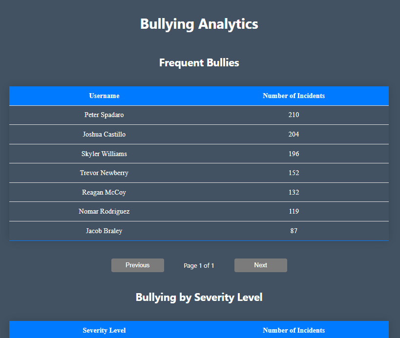The Frequent Bullies table displays the top 10 users who have been identified as bullies based on the number of incidents they have been involved in.
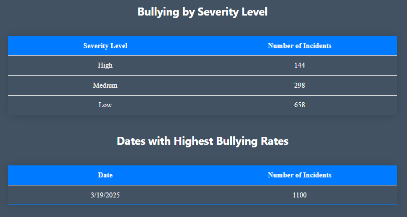The Bullying By Severity Level table displays the number of incidents for each severity level.
The Dates with Highest Bullying Rates table displays the dates with the highest number of incidents.
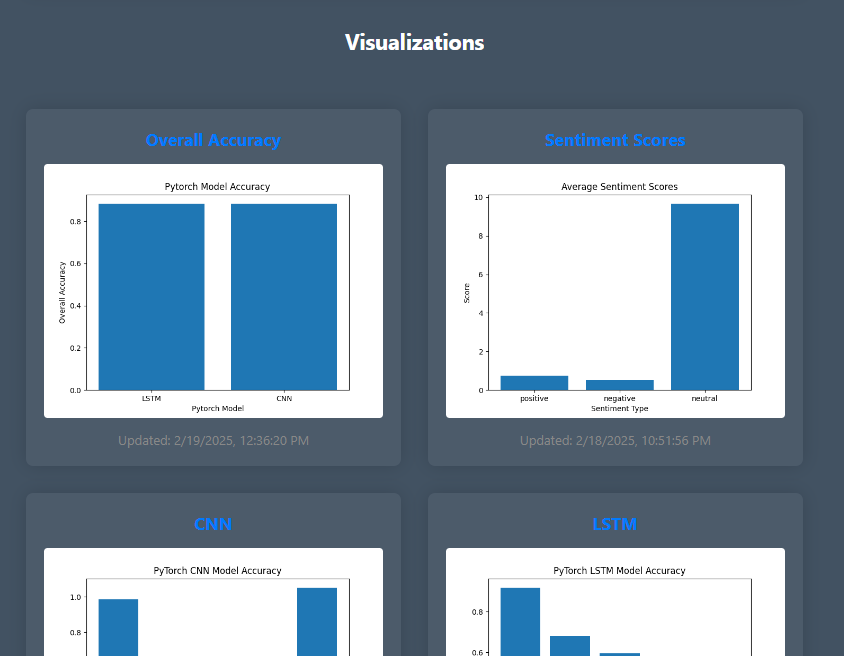Visualizations of application performance are also displayed. Each can be selected to view a larger preview.
-
Home: Greets the user to the website and provides a brief overview of the other pages via clickable widgets.
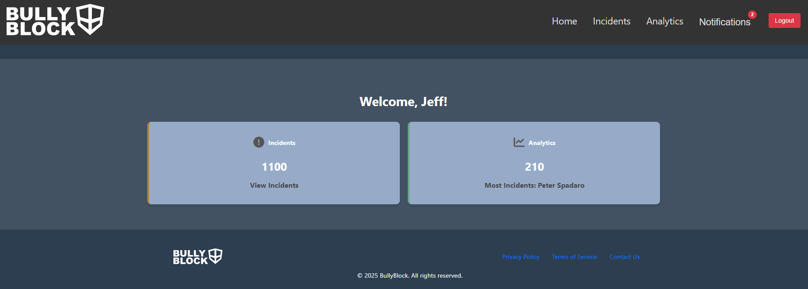The Home Dashboard page displays two selectable widgets. Selecting a widget will navigate the user to the respective page.
The first is the Incidents widget which displays a highlight of the current number of incidents in the queue.
The second is the Analytics widget, which cycles through highlights of each table found on the Analytics page.
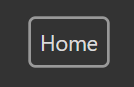To navigate back to the Dashboard page, select the Home button on the Navbar.
-
Incidents: A constantly updating table of flagged bullying incidents that contains the Content ID, User ID, Username, Severity Level, Alert Status, and Timestamp of each incident. Every incident is clickable and will redirect the user to the Incident Details page.
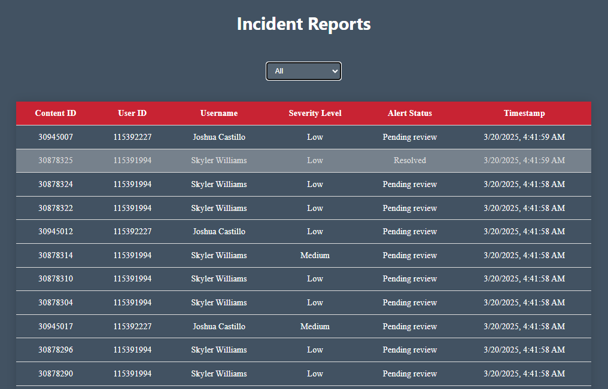 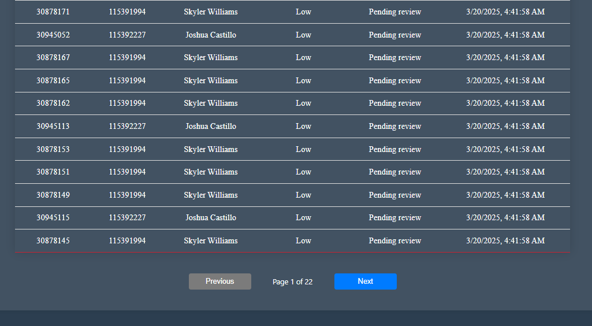 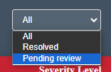 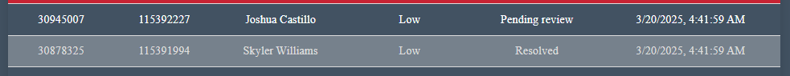 -
Incident Details: The set of data associated with a detected cyberbullying event. This page allows the user to change the status of incidents from "pending review" to "resolved."
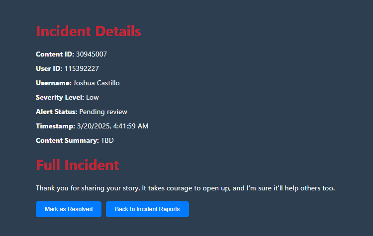 -
Login: The authentication process through which a user gains access to the BullyBlock system.
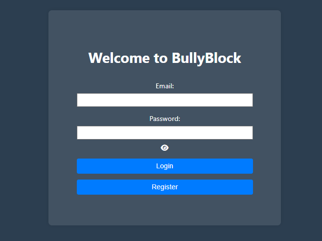 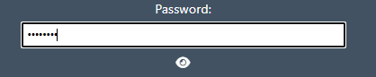 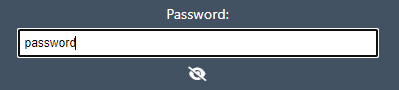 -
Register: The registration interface allows for the creation of new application user accounts with role-based privileges.
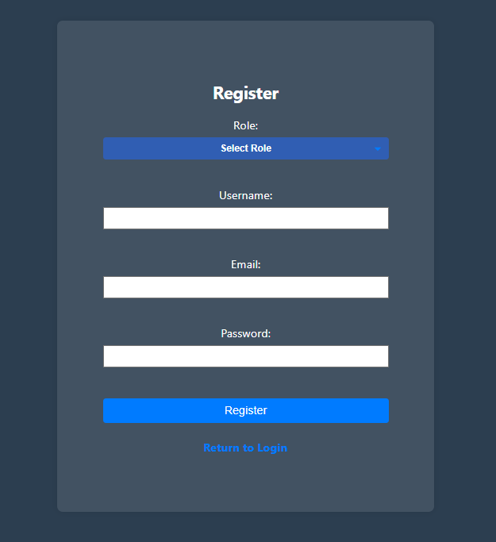
Common Components:
-
Button: Serves as a trigger for certain actions or processes when pressed.
-
Footer: Provides supplementary navigation links such as privacy policy, terms of use, and contact information.
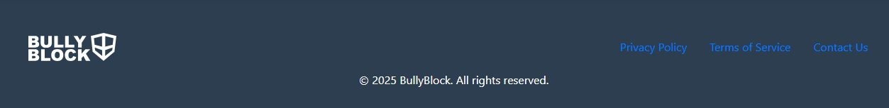 -
Navigation Bar: Allows users to navigate the platform, with links to core pages like Home, Analytics, and Incidents.
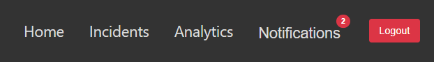 -
Notification Pop-Up: Displays a pop-up of recent notifications that is updated with each alert.
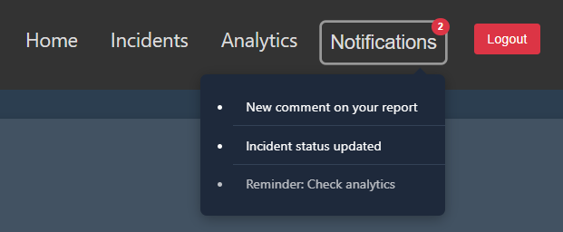
Specific Components:
-
Dashboard Widget: Visually identifies the key pages that perform the major functions of the application. Displayed on the landing page once a user logs in.